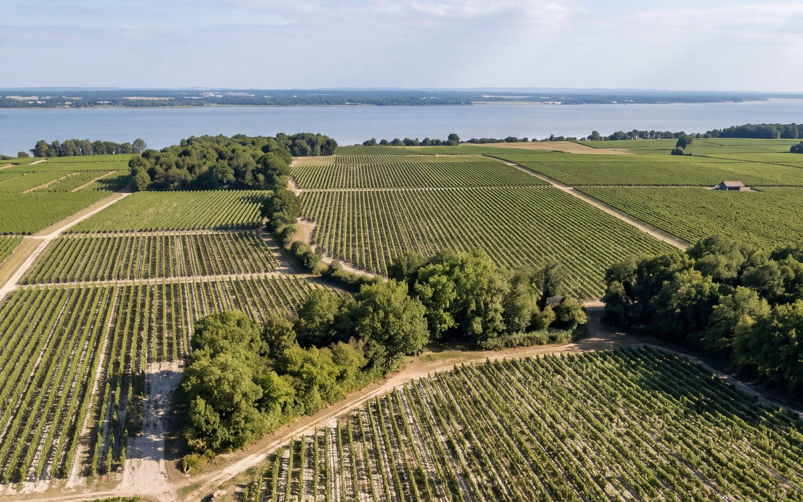

Haut-Médoc : comprendre l’appellation en cinq minutes
On la lit sur des milliers d’étiquettes, entre Margaux et Saint-Estèphe. Mais que désigne exactement l’appellation Haut-Médoc, et qu’est-ce qui fait le caractère de ses vins ? Petit tour d’un terroir façonné par l’eau.

Médoc ou Haut-Médoc : où est la différence ?
Le Médoc est la presqu’île qui s’étend au nord de Bordeaux, entre l’océan Atlantique et l’estuaire de la Gironde. Son vignoble suit l’estuaire sur une bande de quelques kilomètres de large. Il se partage entre deux appellations régionales :
- Médoc, au nord, la partie que l’on appelait autrefois le Bas-Médoc ;
- Haut-Médoc, au sud, de Blanquefort, aux portes de Bordeaux, jusqu’à Saint-Seurin-de-Cadourne.
« Haut » ne désigne pas l’altitude, car le relief est très doux. Le mot renvoie à la position sur le fleuve : le Haut-Médoc est en amont, plus près de Bordeaux.
Dans le Haut-Médoc se trouvent aussi six appellations communales : Margaux, Moulis-en-Médoc, Listrac-Médoc, Saint-Julien, Pauillac et Saint-Estèphe. Les vignes situées hors de ces communes portent l’appellation Haut-Médoc. Créée en 1936, elle compte parmi ses vins cinq crus classés en 1855.
Un terroir façonné par l’eau
Les graves
Les sols les plus réputés du Haut-Médoc sont les graves : des galets, des graviers et du sable arrachés aux Pyrénées et au Massif central, puis charriés par les rivières au fil des glaciations. Ces graves forment des croupes, de petites collines bien drainées.
Le jour, les cailloux emmagasinent la chaleur et la restituent la nuit. L’eau de pluie s’écoule vite, si bien que la vigne doit plonger ses racines en profondeur pour trouver de quoi boire. C’est le terroir idéal du cabernet-sauvignon, qui y mûrit lentement.

Les argiles et le calcaire
Au nord du Haut-Médoc, vers Saint-Estèphe et Saint-Seurin-de-Cadourne, les graves se mêlent d’argiles, et le calcaire affleure par endroits. Ces sols plus frais, qui retiennent mieux l’eau, conviennent bien au merlot.
L’estuaire
La Gironde est le plus grand estuaire d’Europe occidentale. Sa masse d’eau joue le rôle de régulateur thermique : elle limite les gelées de printemps et tempère les fortes chaleurs. Dans le Médoc, on dit volontiers que les meilleures vignes sont celles qui « voient la rivière ».
Saint-Seurin-de-Cadourne, au nord de l’appellation
Saint-Seurin-de-Cadourne est la commune la plus au nord du Haut-Médoc, juste après Saint-Estèphe. Les trois châteaux de la famille Miailhe y montrent trois visages d’un même terroir :
- Coufran occupe une colline de graves et d’argiles qui culmine à 21 mètres et regarde l’estuaire. Son merlot y trouve fraîcheur et rondeur.
- Verdignan fait face à l’estuaire, à la frontière de Saint-Estèphe. Ses vieux cabernets poussent sur les graves.
- Soudars est né sur une friche d’argile posée sur le calcaire, au milieu des fossiles marins. Éric Miailhe y a parié sur un sol que l’on disait moins noble, et que le réchauffement du climat rend aujourd’hui précieux.
Leurs racines poussent dans trois sols différents, mais sur la même terre. Pour les découvrir, explorez le terroir des trois châteaux, raconté génération par génération, ou lisez l’histoire de la famille.

Le goût du Haut-Médoc
Les vins du Haut-Médoc sont des rouges. Ils assemblent surtout le cabernet-sauvignon et le merlot, parfois avec du cabernet franc et du petit verdot. On y trouve souvent :
- des arômes de cassis, de fruits noirs et, en vieillissant, de cèdre ou de tabac ;
- une structure tannique qui leur permet de bien vieillir ;
- une fraîcheur apportée par le climat océanique.
Chaque château y met son style : plus de merlot pour un vin rond, plus de cabernet pour un vin de garde. Pour comprendre ce que changent les cépages, voyez notre article merlot ou cabernet-sauvignon.
Questions fréquentes
Quelle est la différence entre Médoc et Haut-Médoc ?
Ce sont deux appellations voisines de la rive gauche de la Gironde. Le Médoc couvre le nord de la presqu’île, le Haut-Médoc le sud, plus près de Bordeaux. « Haut » signifie en amont sur le fleuve, et non plus en altitude.
Les vins du Haut-Médoc se gardent-ils ?
Oui. Grâce à leur structure, beaucoup de vins du Haut-Médoc se gardent de quelques années à une quinzaine d’années selon le château et le millésime. Certains producteurs les gardent pour vous jusqu’à ce qu’ils soient prêts à boire.
Le Haut-Médoc produit-il des vins blancs ?
L’appellation Haut-Médoc concerne uniquement les vins rouges. Les vins blancs produits dans la région sont vendus sous l’appellation Bordeaux.
L’abus d’alcool est dangereux pour la santé, à consommer avec modération.